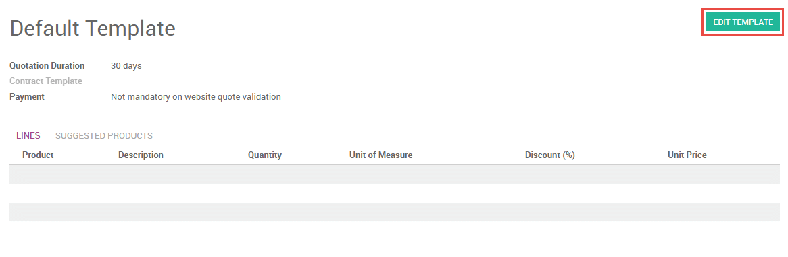

Настройка
Включение онлайн-котировок
Чтобы отправлять онлайн-котировки, сначала необходимо включить онлайн-предложения в приложении «Продажи»: menuselection: «Конфигурация -> Настройки». При этом вам будет предложено установить приложение «Веб-сайт», если вы еще этого не сделали.

Вы можете просмотреть онлайн-версию каждой созданной вами котиравки после включения этого параметра, выбрав ** Preview ** в верхней части цитаты.

Редактирование онлайн-котировок
Страница онлайн-котировки может быть отредактирована для каждого шаблона расценок в приложении «Продажи» через: menuselection: «Конфигурация -> Шаблоны котировок». Из любого шаблона котировок выберите ** Изменить шаблон [UNKNOWN NODE problematic], чтобы перейти на соответствующую страницу вашего веб-сайта.
Вы можете добавить текст, изображения и структурные элементы на страницу котировки, перетащив и отбросив блоки из поддона в меню левой боковой панели. Оглавление будет автоматически создаваться на основе добавляемого вами контента.
Расширенные описания для каждого продукта в отображаются на странице онлайн-котировки. Эти описания наследуются со страницы продукта в вашем магазине электронной коммерции и могут редактироваться непосредственно на странице через встроенный текстовый редактор.

Вы можете разрешить платеж сразу после того, как клиент проверит котировку, выбрав вариант оплаты в шаблоне котировки.
Вы можете отредактировать веб-страницу отдельной цитаты, как и любой веб-страницы, нажав кнопку ** Изменить [UNKNOWN NODE problematic]. Изменения, внесенные таким образом, будут влиять только на индивидуальную котировку.
Использование онлайн-котировок
Чтобы поделиться онлайн-предложением с вашим клиентом, скопируйте URL-адрес онлайн-котировки, а затем поделитесь им с клиентом.

Кроме того, ваш клиент может получить доступ к своим онлайн-котировкам, войдя на ваш сайт через портал клиентов. Ваш клиент может принять или отклонить предложение, распечатать его или обсудить условия в поле чата. Вы также получите уведомление в разговоре в Odoo, когда клиент просмотрит котировку.